Les architectures micro-services
Présentation par Arnaud Brunet
Questions / Remarques
Questions / Remarques
Il n'y a pas de questions bêtes
Questions / Remarques
Il n'y a pas de honte à ne pas savoir
Questions / Remarques
Je peux me tromper
Pourquoi les microservices ?
Le bloc monolithique
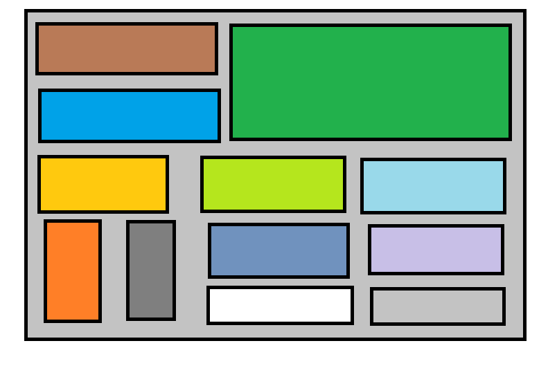
Découpé en composants rassemblés en un seul livrable livré tous les 6 mois
Une grosse équipe
Vingt personnes gèrent le projet
Communication
Des petites équipes
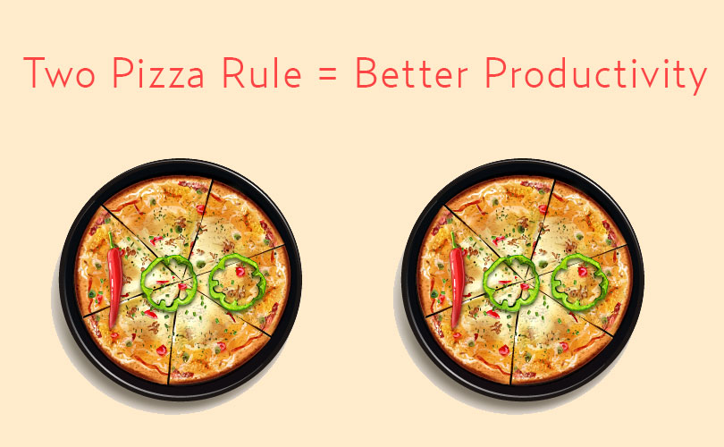
Livraison
environ 3 heures pour livrer
Livraison
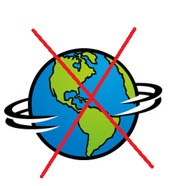
applicaton inaccessible
Livraison
incertitude, stress, ...
Les pannes
mécontantement, stop the world
Complexité
système trop gros = trop d'informations
Transactions
évite le rollback, reprise sur erreur à la main, transactions distribuées
Scalabilité
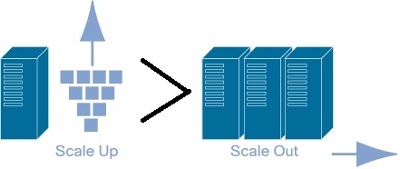
verticale > horizontal
Micro-services
Définition
Unité fonctionnelle
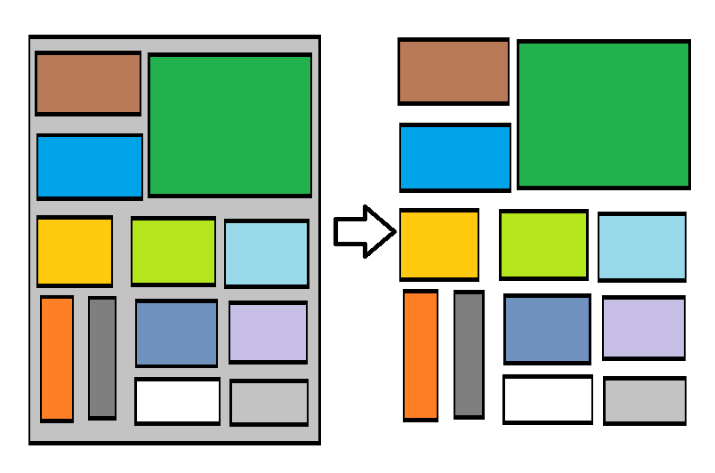
autonome sur la fonctionnalité
Indépendant
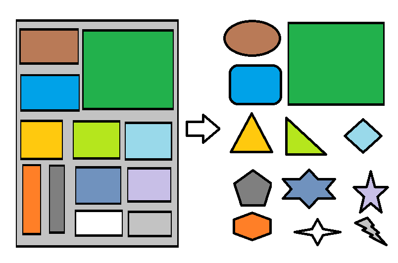
sur le code, les données et leurs gestions
Communication
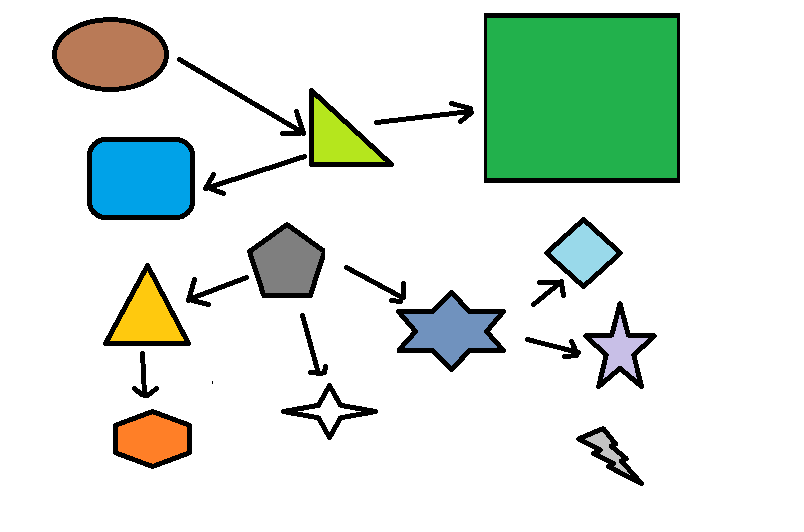
RPC, REST
Exemple
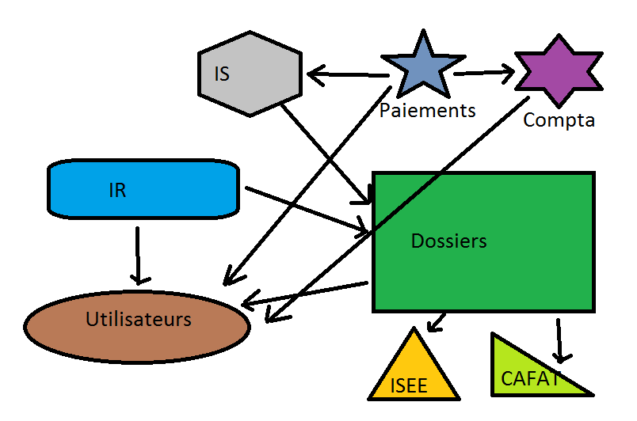
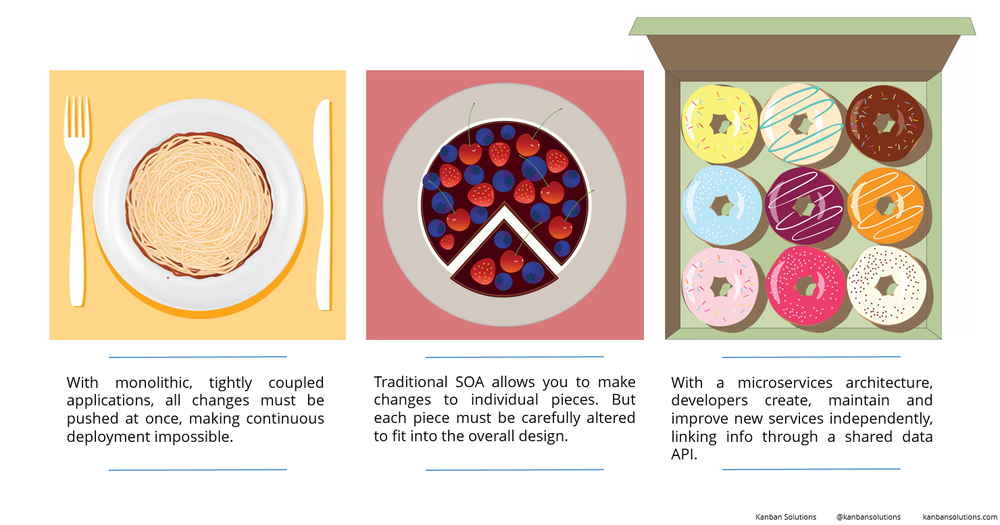
Micro-services
Avantages
Equipes
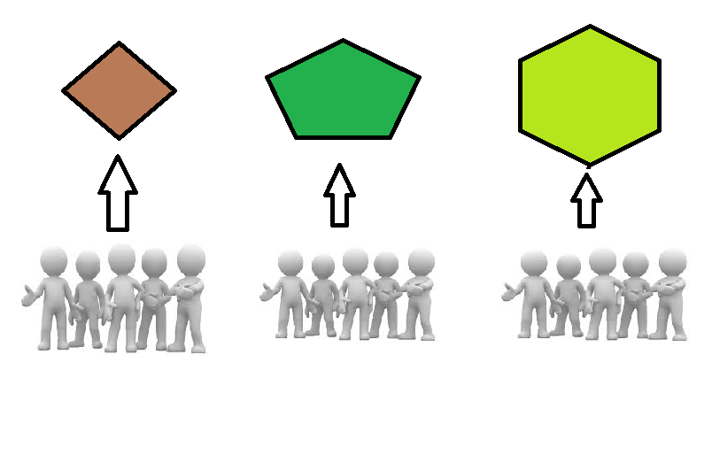
autonome, multidisciplinaires, responsable
KISS

comprehension, maintenance, évolutivité
Automatisation
simple => facile à automatiser => simplicité
Continuous delivery
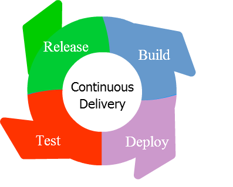
simplicité => Mep facilité => mep souvent, moins de stress, de peurs, ...
Béta perpetuelle
lean software, amélioration continue, le changement c'est bien
Ça va couper chérie !
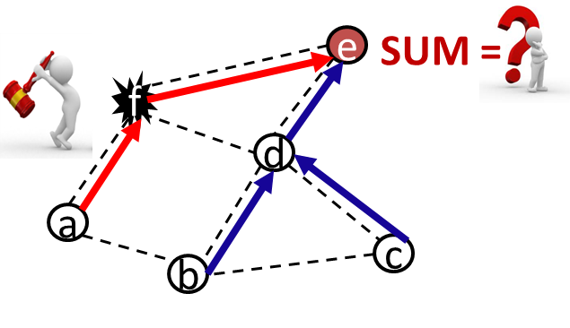
fait partie du système, failover, pas forcément visible pour l'utilisateur
Scalabilité
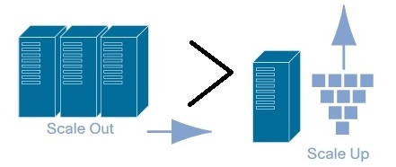
scalabilité horizontale > verticale
Surveillance
plantage => monitoring => réaction rapide
Micro-services
Inconvenients
Complexité externe
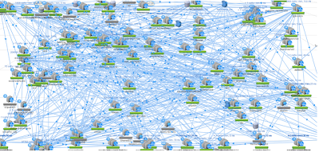
système difficile à appréhender dans son ensemble.
Patterns
API gateway

un point d'entrée, masque la complexité
Services registry / Self registration

indépendance du service et de sa localisation
Service instante per container
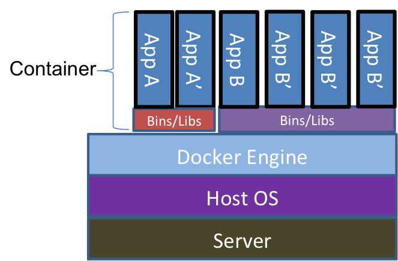
déploiement facilité
Database per service

indépendance du service et de ses données
Conclusion
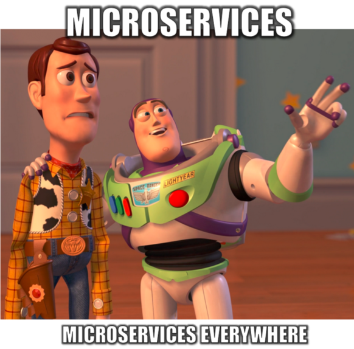